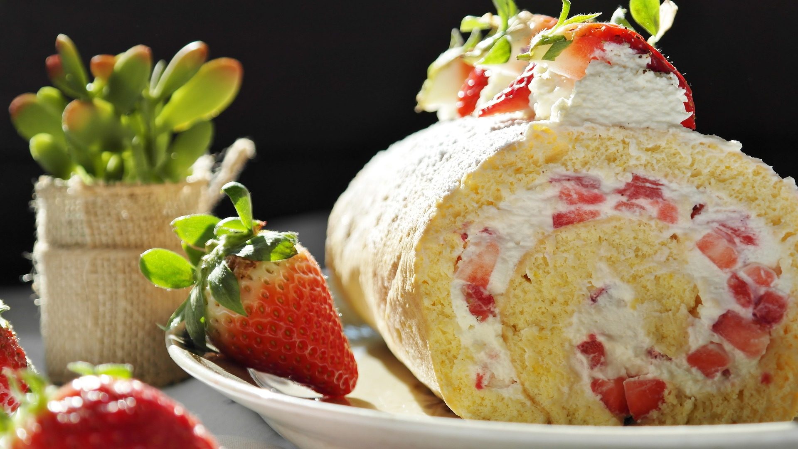

Kesäinen kääretorttu (glut.)

Tämä muutaman aineen gluteeniton herkku on helppo valmistaa vaikka mökkiolosuhteissa.
Pelkkien perunajauhojen käyttö taikinassa tekee kääretortusta ihanan kuohkean.
Kääretorttu myös rullaantuu helpommin tärkkelyspitoisen jauhon avulla.
Tuoreet mansikat ja vaniljainen kermavaahto tuovat kesän kielelle.
Raaka-aineet
- 4 kpl kananmunia
- 1,5 dl sokeria
- 1,5 dl perunajauhoja
- 1 tl leivinjauhetta
- 2-3 dl vispikermaa
- 1 rkl sokeria
- 1 tl vaniljasokeria
- n. 4 dl tuoreita mansikoita
- sokeria valmiin torttupohjan sokeroimiseen
Valmistus
- Laita uuni lämpiämään 200 asteeseen.
- Vaahdota munat ja sokeri hyväksi vaahdoksi.
- Sekoita leivinjauhe perunajauhoihin.
- Lisää seos munavaahtoon siivilän läpi samalla taikinaa käännellen.
- Levitä taikina tasaisesti uunipellille leivinpaperin päälle.
- Paista uunissa n. 10 minuuttia. Voit kokeilla esimerkiksi hammastikulla kypsyyttä.
- Ripottele puhtaalle leivinpaperille sokeria ja kumoa valmis pohja sen päälle. Irrota leivinpaperi varovasti pohjasta.
- Pohjan hieman jäähtyessä, vaahdota kermavaahto ja mausta se sokerilla ja vaniljasokerilla.
- Pilko mansikat kuutioiksi. Levitä kermavaahto tasaisesti pohjan päälle, jätä alareunasta pari senttiä kuitenkin täyttämättä.
- Ripottele mansikat kermavaahdon päälle. Rullaa pohja yläreunasta aloittaen tiukaksi rullaksi, niin että saumakohta jää alapuolelle.
- Anna tortun tekeytyä pari tuntia jääkaapissa ennen tarjoilua. Voit koristella tortun esimerkiksi kermavaahtopursotuksilla ja mansikoilla.